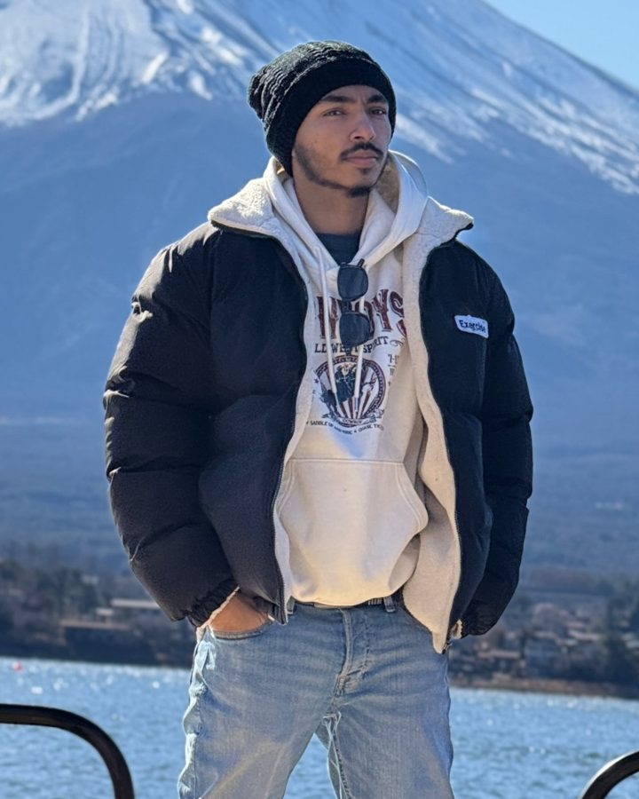

About us
The Busan locals love
Hidden Yeongdo is a small tour startup founded by a student who wanted visitors to see more than crowded beaches.

Founder
Chishtia Nion Utsho
Utsho is the founder and only member of Hidden Yeongdo. He started it to show visitors the side of Busan that locals love: quiet cliff paths, a guardian mountain and a pebble beach at sunset, all on one island.
He researches every place, plans the routes, designs and builds this website, and tells the stories of each stop along the way.